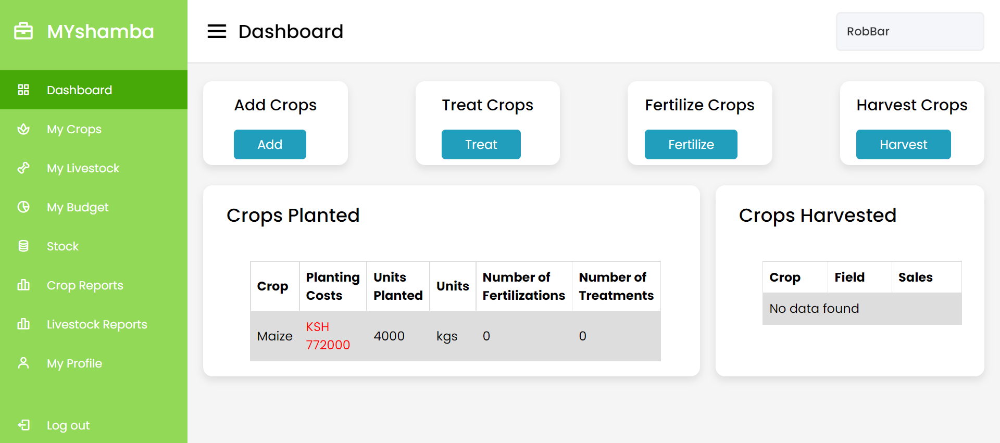

Projects
-
Web-based farm management system
A farm management system can be a powerful management tool. Accurate financial records in form of budgeting, coupled with the data on production will help the farm make the necessary changes to function optimally. This efficiency on the farm will lead to more profit for the farmers both economically and in terms of yield. Proper storing of records keeping will allow for farmers to point out weaknesses on the farm and attend to them making their enterprise more efficient. Studies have shown that the efficiency of milk production can be increased through the practice of using simple, precise, understandable, and easily maintained recording system
The app allows users to record information about their crops, record information about their animals, and uses the recorded information to generate reports. Click the link below to learn more.
Farm Management System Details -
Diabetes Prediction Systems

The project is a Streamlit-based web application that predicts the risk of diabetes for women. It offers a user-friendly interface where users can input their information through sliders representing various diabetes risk factors such as pregnancies, glucose level, blood pressure, skin thickness, insulin level, BMI, diabetes pedigree function, and age. The application employs a pre-trained machine learning model, loaded from a pickle file, to generate the risk prediction. The output informs the user whether they are at a high or low risk of developing diabetes. The goal is to provide women with valuable insights about their health and encourage proactive measures to mitigate the risk of diabetes. Click the link below to learn more.
Diabetes prediction system.